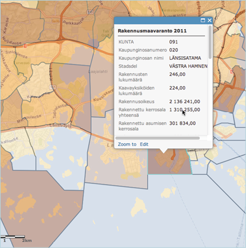

Text Petja Partanen
The Helsinki Region Environmental Services Authority (HSY) published the data of the metropolitan area’s population and housing stock in a grid of 500 x 500 m squares, accessible to all.
HSY’s geodata expert Henna-Kaisa Räsänen presents the analyses of the students of a recent practice course organised by the University of Helsinki. Geographers rummaged the data opened by HSY. The visualisations they produced answer many questions. What are the areas with crowded living conditions, and where is spacious housing located? Where are the unbuilt lots of the metropolitan area situated? In the hands of experts, the seemingly endless data masses are transformed into valuable information.
Suvi Uotila, a colleague of Räsänen, says that such data as this could only have been dreamt of ten years ago when she was a student of geography. ”We had to come up with our own data with which we wrote our practice work. Open geodata did not exist.”
Now it does – thanks to HSY’s data releases. That agency maintains the geodata of the Helsinki Metropolitan Area. One of the datasets maintained by HSY is the SePe Regional Base Register. Updated every two weeks, the spatial dataset serves the planners and researchers of the region.
When the HRI project proposed opening the HSY data to the public, Räsänen and Uotila were eagerly engaged with the project. The first data release was carried out in December 2011. At first, the problem
was that the data was too detailed; the register has information on every building in the metropolitan area. To secure data protection, the machine-readable data had to be anonymised.
HSY now waits to see what the data release will produce. The data has been already used as material for practice work on a university course as well as in visualisations of the results of last year’s presidential election.
HSY open data

The open data published by the Helsinki Region Environmental Services Authority HSY contains three datasets, updated annually and covering the cities of the metropolitan area. These are the regional land reserve for buildings, the population data grid and the building data grid. The size of the squares in the maps is 500 x 500m. The spatial datasets can be downloaded free of charge in MapInfo (tab and mif/mid) and in Esri shape formats.i

•
The texts of the publication are licensed under the 'HRI-nimeä' attribution. All reuse of the material must be accompanied by the name of the author (Petja Partanen or Terhi Upola) and the publisher (Helsinki Region Infoshare).
This is how the data was opened
Autumn 2009 The idea was born to open HSY data.
2010 The HRI project is launched. HRI experts encourage HSY to open its data reserves.
Spring 2011 Pekka Vuori from the HRI project presents the idea in a regional working group on municipal registers. HSY begins to meet regularly with HRI’s experts.
Autumn 2011 The planning of the HSY data release proceeds to practical details.
December 2011 HSY publishes its first open dataset, including the 2010 data, population building stock and the land reserve for buildings.
Autumn 2009 The idea was born to open HSY data.
2010 The HRI project is launched. HRI experts encourage HSY to open its data reserves.
Spring 2011 Pekka Vuori from the HRI project presents the idea in a regional working
group on municipal registers. HSY begins to meet regularly with HRI’s experts.
Autumn 2011 The planning of the HSY data release proceeds to practical details.
December 2011 HSY publishes its first open dataset, including the 2010 data,
population building stock and the land reserve for buildings.
Spring 2012 The time series from 1997 to 2011 are published as open data.
A geodata course of the University of Helsinki uses the data as course material. dataa hyödynnetään Helsingin yliopiston paikkatietokurssilla.
The time series from 1997 to 2011 are published as open data.
A geodata course of the University of Helsinki uses the data as course material. dataa hyödynnetään Helsingin yliopiston paikkatietokurssilla.
Who made it happen?

Suvi Uotila ja Henna-Kaisa Räsänen
HSY geodata experts
Supplier
HSY
Tips for followers
1. ”Start from small – don’t be too greedy.”
2. ”Try to map the wishes of data users in advance. Go to the meetings of application developers.”
3. ”Keep your eyes open in social media. Follow the feedback and conversation. I joined Twitter to follow the topics of open data. It is an even more active forum than Facebook. You can find a lot of discussions with the hashtag ‘open data’.”
What were your expectations from the data opening?
”We expect that this will help researchers to have easier access to any data they may need. We also believe that direct enqueries to us about specific datasets will decrease.”
What data do you wish to be unlocked?
The highly detailed basemaps that municipalities use as the basis of zoning. ”It would substantially benefit the whole society.”
Why is it important to open data?
”It means new material for students and researchers, and it enables citizens to be better informed about their environment.”
Why is it important to open data?
“It means new material for students and researchers, and it enables citizens to be better informed about their environment."
Where is the data used?
‘Age of neighborhoods’ visualisation
The authors of the Louhos blog analysed the open data of HSY with a variety of data extraction and visualisation tools. For instance, the year of construction of the oldest building in a neighbourhood gives a rough idea of the age distribution of the area.
Course assignments of geography students
A training course organised in 2012 by the geoinformatics programme of the University of Helsinki visualised and analysed the open data released by HSY.
The age distribution of neighborhoods.
The year of construction of the oldest building.